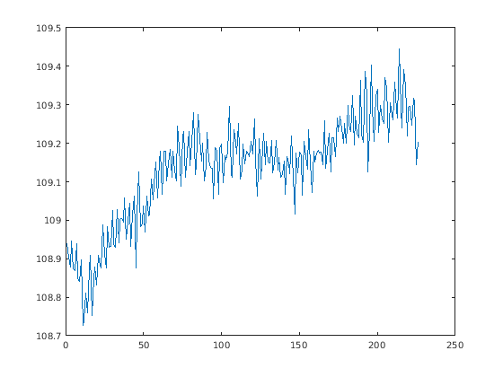
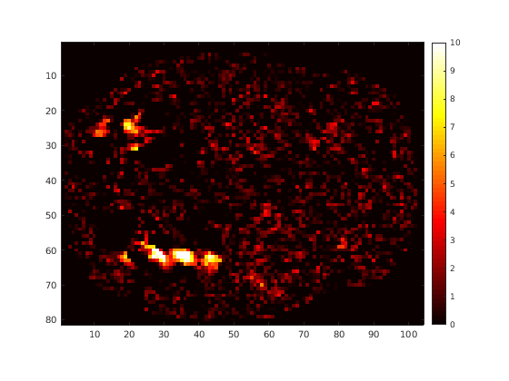
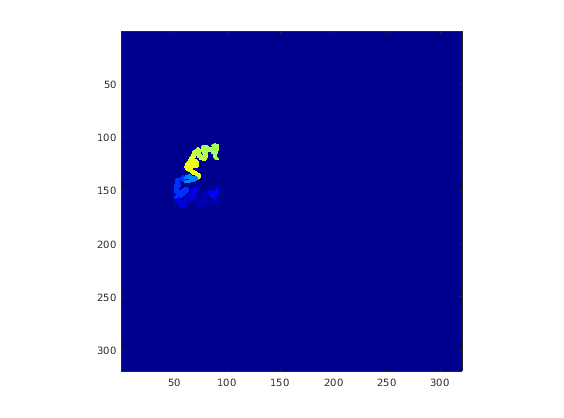
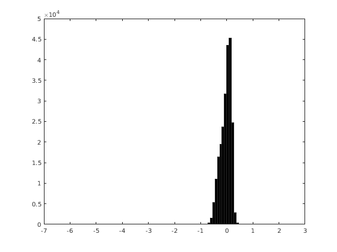
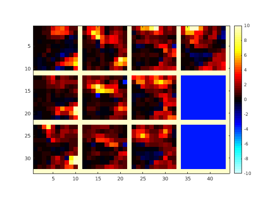
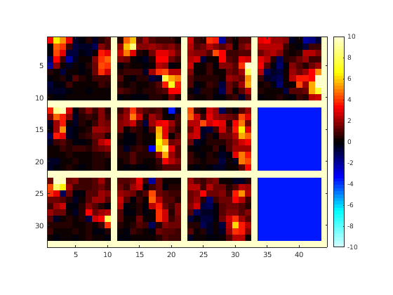

Example 2: Loading data into MATLAB
Contents
- Introduction
- Miscellaneous data (.mat format)
- Text data (.tsv format)
- Volume data as NIFTI files (.nii format)
- Surface data as MGZ files (.mgz format)
- Betas as HDF5 files (.hdf5 format)
- Images as PNG files (.png format)
- Images in HDF5 format (.hdf5 format)
- Cortical surfaces in native FreeSurfer format (lh.white, lh.pial, etc.)
- Surface-based ROI files (various formats such as .mgz, .annot, .label)
Introduction
% In this script, we are going to go through examples of how % to load various types of data files into MATLAB. Loading data % is the first step before we can do data analysis. % % Skills/concepts: % - File formats % - Thinking about data formats (e.g. double, single, int16) % - Issues specific to NIFTI files % - Issues specific to surfaces % - HDF5-related concepts
Miscellaneous data (.mat format)
% MATLAB's .mat format is a catch-all format that can hold % all sorts of different kinds of data. % Load information pertaining to the experimental % design of the NSD experiment. By assigning the output % of load.m to a variable, we encapsulate the loaded variables % into a struct (thus, leaving the workspace uncluttered). a1 = load('~/nsd/nsddata/experiments/nsd/nsd_expdesign.mat'); a1
a1 =
struct with fields:
basiccnt: [3x40 double]
masterordering: [1x30000 double]
sharedix: [1x1000 double]
stimpattern: [40x12x75 double]
subjectim: [8x10000 double]
Text data (.tsv format)
% Although inefficient in terms of disk space, it is sometimes % convenient to store data in text format. The main advantage is that text % is easy to open (e.g. using a text editor or a spreadsheet program). % % A common format is .tsv (tab-separated values), which is similar % to .csv (comma-separated values). % % Typical things to watch out for include: making sure that any descriptive header rows % are ignored or handled appropriately, making sure that missing data (blanks or NaNs) % are handled correctly, making sure that numerical precision is handled correctly, % and making sure that any beginning or ending blank lines are not erroneously % treated as data entries. % Load in motion parameters for one NSD run. Note that in this case, % the text file consists of purely numeric data and has no header rows; % thus, we can simply use load.m to get the data. file0 = '~/nsd/nsddata_timeseries/ppdata/subj01/func1pt8mm/motion/motion_session21_run10.tsv'; a1 = load(file0); size(a1) % 226 volumes x 6 motion parameters
ans = 226 6
figure; plot(a1(:,1));
% Load in behavioral data for one subject. Here we use importdata.m, % which incorporates some assumptions and returns the data in a % somewhat structured format (which is nice). However, because of the % assumptions, it is always a good idea to check the validity of the results. file0 = '~/nsd/nsddata/ppdata/subj01/behav/responses.tsv'; a1 = importdata(file0); a1
a1 =
struct with fields:
data: [30000x19 double]
textdata: {1x19 cell}
colheaders: {1x19 cell}
a1.colheaders
ans =
1x19 cell array
Columns 1 through 5
{'SUBJECT'} {'SESSION'} {'RUN'} {'TRIAL'} {'73KID'}
Columns 6 through 10
{'10KID'} {'TIME'} {'ISOLD'} {'ISCORRECT'} {'RT'}
Columns 11 through 14
{'CHANGEMIND'} {'MEMORYRECENT'} {'MEMORYFIRST'} {'ISOLDCURRENT'}
Columns 15 through 18
{'ISCORRECTCURRENT'} {'TOTAL1'} {'TOTAL2'} {'BUTTON'}
Column 19
{'MISSINGDATA'}
% Let's use an alternative method to load in the behavioral data. % In this method, we will use low-level routines that provide greater % degree of control over the loading process. fid = fopen(file0); a2 = textscan(fid,repmat('%f',[1 19]),'Delimiter','\t','HeaderLines',1); fclose(fid); a2
a2 =
1x19 cell array
Columns 1 through 3
{30000x1 double} {30000x1 double} {30000x1 double}
Columns 4 through 6
{30000x1 double} {30000x1 double} {30000x1 double}
Columns 7 through 9
{30000x1 double} {30000x1 double} {30000x1 double}
Columns 10 through 12
{30000x1 double} {30000x1 double} {30000x1 double}
Columns 13 through 15
{30000x1 double} {30000x1 double} {30000x1 double}
Columns 16 through 18
{30000x1 double} {30000x1 double} {30000x1 double}
Column 19
{30000x1 double}
% Are the two loading schemes equivalent?
isequal(a1.data,cat(2,a2{:}))
ans = logical 0
% Let's try that again. The trick is to realize that NaN does % not equal NaN according to == or isequal.m, but does according % to isequalwithequalnans.m. (Be careful!) isequalwithequalnans(a1.data,cat(2,a2{:}))
ans = logical 1
Volume data as NIFTI files (.nii format)
% NIFTI is a common neuroimaging format that is used to store 3D % (e.g. X x Y x Z) and 4D (e.g. X x Y x Z x T) volumes. % Here, we will use a function from the NIfTI_20140122 toolbox % in order to load in a volume of t-values (faces vs. non-faces). a1 = load_untouch_nii('~/nsd/nsddata/ppdata/subj01/func1pt8mm/floc_facestval.nii.gz'); a1
a1 =
struct with fields:
hdr: [1x1 struct]
filetype: 2
fileprefix: '~/nsd/nsddata/ppdata/subj01/func1pt8mm/floc_facestval'
machine: 'ieee-le'
ext: []
img: [81x104x83 single]
untouch: 1
% Some header fields that may be of interest include: a1.hdr.dime.dim % the volume has matrix size 81 x 104 x 83
ans =
3 81 104 83 1 1 1 1
a1.hdr.dime.pixdim % the voxel size is 1.8-mm isotropic; the temporal resolution is 1.333 s
ans =
Columns 1 through 3
0 1.79999995231628 1.79999995231628
Columns 4 through 6
1.79999995231628 1.33333337306976 1
Columns 7 through 8
1 1
% Importantly, the actual data is stored in a1.img. % Notice that the data have been saved in single format % (which occupies half the space compared to double format). a1
a1 =
struct with fields:
hdr: [1x1 struct]
filetype: 2
fileprefix: '~/nsd/nsddata/ppdata/subj01/func1pt8mm/floc_facestval'
machine: 'ieee-le'
ext: []
img: [81x104x83 single]
untouch: 1
% Let's visualize one slice of the data figure; imagesc(a1.img(:,:,34),[0 10]); colormap(hot); colorbar; axis image;
% As a matter of convention, all prepared NSD data are saved in LPI, % meaning that the first voxel is left, posterior, and inferior. % In the following animation, we can check that this is the case. if 0 for p=1:size(a1.img,3), p imagesc(a1.img(:,:,p),[0 10]); colormap(hot); colorbar; axis image; pause; end end % One more example. Here, we load a volume of ROI labels for visual cortex. % These are in the 0.8-mm anatomical space (matrix size is 320 x 320 x 320). a1 = load_untouch_nii('~/nsd/nsddata/ppdata/subj01/anat/roi/lh.Kastner2015.nii.gz'); a1
a1 =
struct with fields:
hdr: [1x1 struct]
filetype: 2
fileprefix: '~/nsd/nsddata/ppdata/subj01/anat/roi/lh.Kastner2015'
machine: 'ieee-le'
ext: []
img: [320x320x320 double]
untouch: 1
% Visualize and check that it makes sense. figure; imagesc(a1.img(:,:,150),[0 25]); colormap(jet); axis image;
% You may also want to load the exact same file in ITK-SNAP to compare.
Surface data as MGZ files (.mgz format)
% FreeSurfer uses .mgh/.mgz format for its internal file storage. % Although this format can store both volume and surface data, the prepared % NSD data make use of the .mgz format just to store surface data. % % Surface data do not have an easy ordering scheme, so surface data % can essentially be thought of as a vector of values that correspond % to the vertices that make up a surface. FreeSurfer generally keeps % left and right hemispheres separate; hence, for a complete set of % surface data, we typically use two .mgz files (e.g. lh.XXX.mgz % and rh.XXX.mgz). % Load in curvature values for the left hemisphere of one subject. % We use cvnloadmgz.m (which is just a wrapper around load_mgh.m, % a function provided by FreeSurfer). a1 = cvnloadmgz('~/nsd/nsddata/freesurfer/subj01/surf/lh.curvature.mgz'); size(a1) % vertices x 1
ans =
227021 1
figure; hist(a1(:),100); % gyri are < 0; sulci are > 0
 % Load in the Kastner2015 ROI labeling for the left hemisphere % of the fsaverage surface. Notice that the number of vertices in the % fsaverage surface is special and canonical. a1 = cvnloadmgz('~/nsd/nsddata/freesurfer/fsaverage/label/lh.Kastner2015.mgz'); size(a1) % vertices x 1
ans =
163842 1
union(a1(:),[])' % values are integers 0-25
ans =
Columns 1 through 13
0 1 2 3 4 5 6 7 8 9 10 11 12
Columns 14 through 26
13 14 15 16 17 18 19 20 21 22 23 24 25
Betas as HDF5 files (.hdf5 format)
% In the prepared NSD data, the primary data of interest are the beta weights % (fMRI response amplitudes) obtained for each trial. These betas are provided % in both NIFTI format as well as HDF5 format. The primary advantage of % HDF5 format is that it supports random access, and therefore can greatly % speed up loading of the data. % Use h5read.m to load in betas from the 15th NSD scan session. There are 750 % trials in each session, and so we will be loading in 750 betas. % We load in data for only 5 voxels: we start at voxel (10,10,10) and load % in voxels 10 through 14 along the 3rd dimension. file0 = '~/nsd/nsddata_betas/ppdata/subj01/func1pt8mm/betas_fithrf/betas_session15.mat'; data = h5read(file0,'/betas',[10 10 10 1],[1 1 5 750]); size(data)
ans =
1 1 5 750
class(data) % note that the data are stored in int16 format
ans =
'int16'
% Alternatively, we can use matfile.m as the loading mechanism. Compared to load.m, % the primary draw of matfile.m is that variables are not actually loaded % from disk until you specifically request them. In addition, matfile.m % supports random access (like h5read.m). In the code below, notice that we explicitly % cast the data to double format and then divide by 300 in order to convert % the betas to units of percent signal change. data = []; % 10 x 10 x 10 x 750 trials x 40 sessions for p=1:40, p file0 = sprintf('~/nsd/nsddata_betas/ppdata/subj01/func1pt8mm/betas_fithrf/betas_session%02d.mat',p); a1 = matfile(file0); tic; data(:,:,:,:,p) = double(a1.betas(41:50,3:12,35:44,:))/300; toc; end
p =
1
Elapsed time is 3.799920 seconds.
p =
2
Elapsed time is 4.291926 seconds.
p =
3
Elapsed time is 4.239383 seconds.
p =
4
Elapsed time is 4.219766 seconds.
p =
5
Elapsed time is 3.287139 seconds.
p =
6
Elapsed time is 3.857205 seconds.
p =
7
Elapsed time is 3.509203 seconds.
p =
8
Elapsed time is 3.601303 seconds.
p =
9
Elapsed time is 3.039621 seconds.
p =
10
Elapsed time is 3.311054 seconds.
p =
11
Elapsed time is 3.182775 seconds.
p =
12
Elapsed time is 3.320419 seconds.
p =
13
Elapsed time is 3.267112 seconds.
p =
14
Elapsed time is 3.344784 seconds.
p =
15
Elapsed time is 3.530162 seconds.
p =
16
Elapsed time is 3.413560 seconds.
p =
17
Elapsed time is 3.539059 seconds.
p =
18
Elapsed time is 3.395545 seconds.
p =
19
Elapsed time is 3.207566 seconds.
p =
20
Elapsed time is 3.267954 seconds.
p =
21
Elapsed time is 3.341347 seconds.
p =
22
Elapsed time is 3.131565 seconds.
p =
23
Elapsed time is 3.597477 seconds.
p =
24
Elapsed time is 3.378706 seconds.
p =
25
Elapsed time is 3.798114 seconds.
p =
26
Elapsed time is 4.229713 seconds.
p =
27
Elapsed time is 4.202617 seconds.
p =
28
Elapsed time is 4.147491 seconds.
p =
29
Elapsed time is 3.833010 seconds.
p =
30
Elapsed time is 3.975075 seconds.
p =
31
Elapsed time is 4.024678 seconds.
p =
32
Elapsed time is 3.804911 seconds.
p =
33
Elapsed time is 3.790908 seconds.
p =
34
Elapsed time is 3.790941 seconds.
p =
35
Elapsed time is 4.315197 seconds.
p =
36
Elapsed time is 4.532585 seconds.
p =
37
Elapsed time is 4.031229 seconds.
p =
38
Elapsed time is 4.074241 seconds.
p =
39
Elapsed time is 4.430541 seconds.
p =
40
Elapsed time is 4.318130 seconds.
size(data)
ans =
10 10 10 750 40
% Let's average the betas across trials and sessions, and then look at the result. temp = mean(mean(data,4),5); figure; imagesc(makeimagestack(temp),[-10 10]); axis image; colormap(cmapsign4); colorbar;
% We might want to look at the results using ITK-SNAP, which might be more intuitive/easy. % To do that, we need to write the result to a NIFTI file. nsd_savenifti(temp,[1.8 1.8 1.8],'test.nii.gz'); % Load the test.nii.gz file into ITK-SNAP and see if you can convince yourself % that the two visualizations are consistent. Note that the function makeimagestack.m % extracts slices from the third dimension and places successive images downwards % and then rightwards. In addition, remember that the NSD volumes are saved in LPI % order. Thus, the orientation of the slices from makeimagestack.m do not match % the orientation of the first panel in ITK-SNAP (which is in "AR" ordering). % To make the figure from makeimagestack.m match ITK-SNAP, one can do the following: fun = @(x) flipdim(flipdim(permute(x,[2 1 3]),1),2); figure; imagesc(makeimagestack(fun(temp)),[-10 10]); axis image; colormap(cmapsign4); colorbar;
Images as PNG files (.png format)
% The .png file format is a lossless image format that is commonly % used for everyday computer tasks. It is convenient because your OS % can probably just open it and view it. However, the .png format does % not store multiple images, and having to keep track of large numbers % of files can cause severe slowdowns. % Load in one specific image file0 = '~/nsd/nsddata/stimuli/nsd/shared1000/shared0001_nsd02951.png'; im = imread(file0); % 425 pixels x 425 pixels x 3 (uint8 format) size(im)
ans = 425 425 3
figure; imshow(im);
class(im)
ans =
'uint8'
% Load in many images stimfiles = matchfiles('~/nsd/nsddata/stimuli/nsd/shared1000/*.png'); im = zeros(425,425,3,1000,'uint8'); for p=1:length(stimfiles) statusdots(p,length(stimfiles)); im(:,:,:,p) = imread(stimfiles{p}); end size(im)
....................
ans =
425 425 3 1000
Images in HDF5 format (.hdf5 format)
% The NSD experiment involves a large number of images (73,000). We elected % to store these images in uint8 format in a single, very large .hdf5 file % in order to facilitate access. % Load in the 2951st NSD image stimfile = '~/nsd/nsddata_stimuli/stimuli/nsd/nsd_stimuli.hdf5'; im = h5read(stimfile,'/imgBrick',[1 1 1 2951],[3 425 425 1]); im = permute(im,[3 2 1]); % 425 pixels x 425 pixels x 3 (uint8 format) figure; imshow(im);
class(im)
ans =
'uint8'
Cortical surfaces in native FreeSurfer format (lh.white, lh.pial, etc.)
% Use freesurfer_read_surf_kj.m (which is just a wrapper around % the freesurfer_read_surf.m function provided by FreeSurfer) to % read in the left hemisphere white-matter surface of one subject. [vertices,faces] = freesurfer_read_surf_kj('~/nsd/nsddata/freesurfer/subj01/surf/lh.white'); size(vertices) % vertices x 3 coordinates
ans =
227021 3
size(faces) % faces x 3 vertex indices
ans =
454038 3
% Let's also load in the inflated version of this surface. [vertices2,faces2] = freesurfer_read_surf_kj('~/nsd/nsddata/freesurfer/subj01/surf/lh.inflated'); % Notice that the white and inflated surfaces have exactly the same number of vertices isequal(size(vertices),size(vertices2))
ans = logical 1
% Also, the white and inflated surfaces have the exact same faces
isequal(faces,faces2)
ans = logical 1
% We can also use cvncode's cvnreadsurface.m to do the loading (which % is yet another wrapper). Note that the function relies on having the % FreeSurfer environment variable SUBJECTS_DIR correctly set. % (That is how it knows where to find the surface files.) getenv('SUBJECTS_DIR')
ans =
'/home/surly-raid4/kendrick-data/nsd/nsddata/freesurfer'
surfL = cvnreadsurface('subj01','lh','inflated',[]); surfL
surfL =
struct with fields:
vertices: [227021x3 double]
faces: [454038x3 double]
Surface-based ROI files (various formats such as .mgz, .annot, .label)
% FreeSurfer outputs a variety of different ROI files; in addition, % the prepared NSD data includes a number of ROIs. To facilitate access % to these ROIs, we can use the function cvnroimask.m. % Load in the Kastner 2015 atlas that has been prepared and mapped onto % subj01's cortical surface. Here we load in ROI labelings for the left hemisphere. [roimask,roidescription] = cvnroimask('subj01','lh','Kastner2015'); % There are 25 ROIs in the atlas; each element of roimask is a binary vector. roimask
roimask =
1x25 cell array
Columns 1 through 3
{227021x1 logical} {227021x1 logical} {227021x1 logical}
Columns 4 through 6
{227021x1 logical} {227021x1 logical} {227021x1 logical}
Columns 7 through 9
{227021x1 logical} {227021x1 logical} {227021x1 logical}
Columns 10 through 12
{227021x1 logical} {227021x1 logical} {227021x1 logical}
Columns 13 through 15
{227021x1 logical} {227021x1 logical} {227021x1 logical}
Columns 16 through 18
{227021x1 logical} {227021x1 logical} {227021x1 logical}
Columns 19 through 21
{227021x1 logical} {227021x1 logical} {227021x1 logical}
Columns 22 through 24
{227021x1 logical} {227021x1 logical} {227021x1 logical}
Column 25
{227021x1 logical}
% A set of names are available too.
roidescription
roidescription =
1x25 cell array
Columns 1 through 3
{'V1v@Kastner2015'} {'V1d@Kastner2015'} {'V2v@Kastner2015'}
Columns 4 through 6
{'V2d@Kastner2015'} {'V3v@Kastner2015'} {'V3d@Kastner2015'}
Columns 7 through 9
{'hV4@Kastner2015'} {'VO1@Kastner2015'} {'VO2@Kastner2015'}
Columns 10 through 12
{'PHC1@Kastner2015'} {'PHC2@Kastner2015'} {'TO2@Kastner2015'}
Columns 13 through 15
{'TO1@Kastner2015'} {'LO2@Kastner2015'} {'LO1@Kastner2015'}
Columns 16 through 18
{'V3B@Kastner2015'} {'V3A@Kastner2015'} {'IPS0@Kastner2015'}
Columns 19 through 21
{'IPS1@Kastner2015'} {'IPS2@Kastner2015'} {'IPS3@Kastner2015'}
Columns 22 through 24
{'IPS4@Kastner2015'} {'IPS5@Kastner2015'} {'SPL1@Kastner2015'}
Column 25
{'FEF@Kastner2015'}
% The names can also be read using this alternative method: file0 = '~/nsd/nsddata/freesurfer/subj01/label/Kastner2015.mgz.ctab'; roidescription2 = read_ctab(file0); roidescription2
roidescription2 =
struct with fields:
numEntries: 26
orig_tab: '~/nsd/nsddata/freesurfer/subj01/label/Kastner2015.mgz.ctab'
struct_names: {26x1 cell}
table: [26x5 int32]
structureID: [26x1 int32]
% Or directly as a text file:
txt = loadtext(file0);
txt
txt =
1x26 cell array
Columns 1 through 4
{'0 Unknown'} {'1 V1v '} {'2 V1d '} {'3 V2v '}
Columns 5 through 8
{'4 V2d '} {'5 V3v '} {'6 V3d '} {'7 hV4 '}
Columns 9 through 11
{'8 VO1 '} {'9 VO2 '} {'10 PHC1 '}
Columns 12 through 15
{'11 PHC2 '} {'12 TO2 '} {'13 TO1 '} {'14 LO2 '}
Columns 16 through 19
{'15 LO1 '} {'16 V3B '} {'17 V3A '} {'18 IPS0 '}
Columns 20 through 23
{'19 IPS1 '} {'20 IPS2 '} {'21 IPS3 '} {'22 IPS4 '}
Columns 24 through 26
{'23 IPS5 '} {'24 SPL1 '} {'25 FEF '}